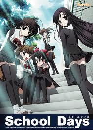

School Days
Makoto Itou is a 2nd year at Sakakino Academy. From his commute to and from school, he develops a crush on a fellow commuter, Kotonoha Katsura. A new friend, Sekai Saionji, helps Makoto become closer and get a date with Kotonoha. However, despite her good efforts, Sekai becomes jealous of the new couple, stemming from her developed feelings for Makoto. One day, she decides to kiss him as payment for helping him get a girlfriend...